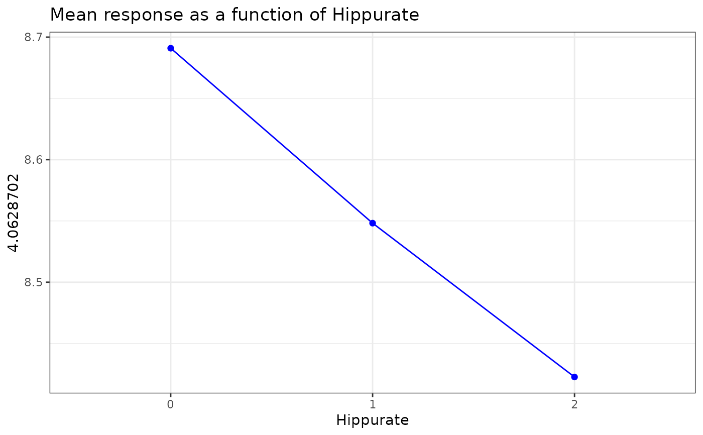
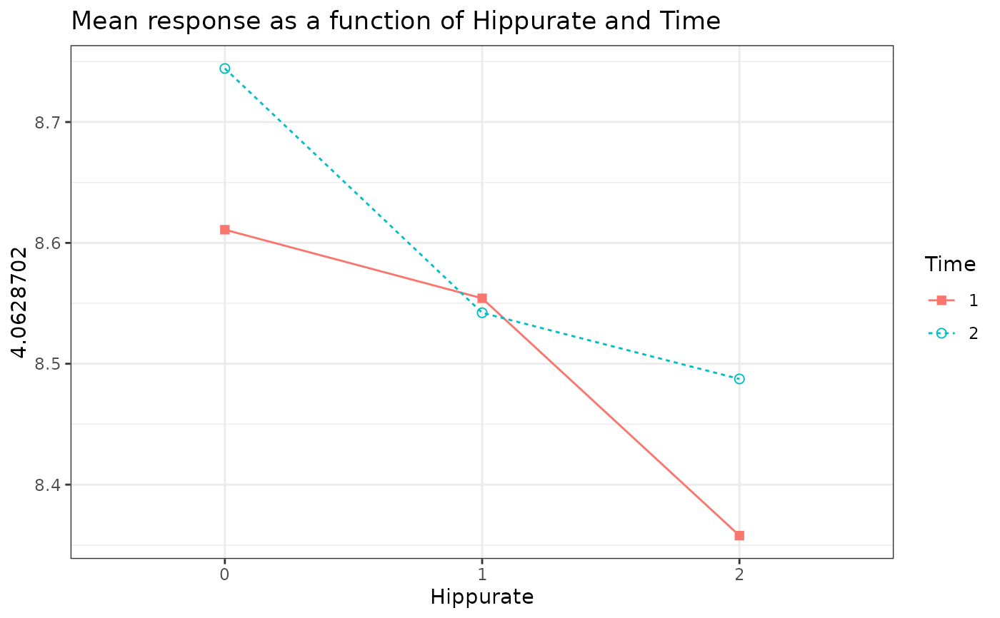
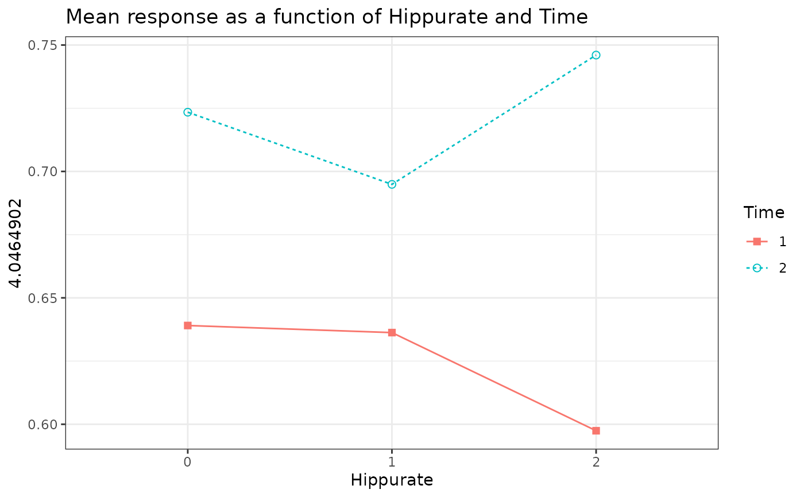
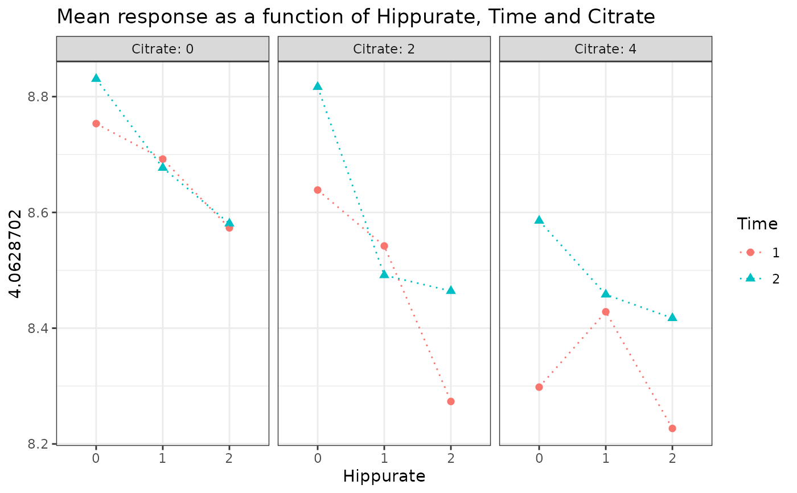
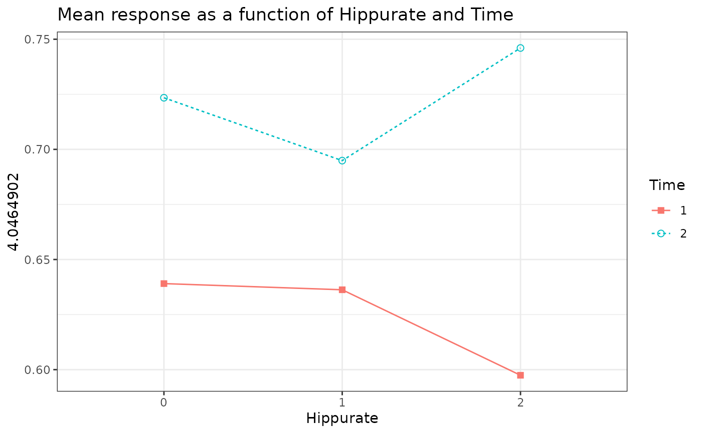
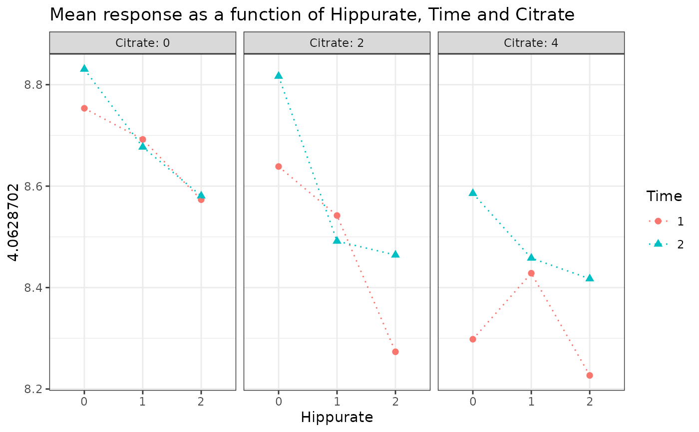

For a given response variable, draws a plot of the response means by levels of up to three categorical factors from the design. When the design is balanced, it allows to visualize main effects or interactions for the response of interest. For unbalanced designs, this plot must be used with caution.
Usage
plotMeans(
Y,
design,
cols = NULL,
x,
z = NULL,
w = NULL,
title = NULL,
xlab = NULL,
ylab = NULL,
color = NULL,
shape = NULL,
linetype = NULL,
size = 2,
hline = NULL,
theme = theme_bw()
)Arguments
- Y
A numerical matrix containing the columns to be drawn.
- design
A \(n \times k\) "freely encoded" experimental design data.frame.
- cols
A vector with either the column name(s) of the \(Y\) matrix to plot (character) or the column index position(s) (integer).
- x
A character string giving the
designfactor whose levels will form the x-axis.- z
A character string giving the
designfactor whose levels will form the traces.- w
A character string giving the
designfactor whose levels will be used for the facet.- title
Plot title.
- xlab
If not
NULL, the label for the x-axis.- ylab
If not
NULL, the label for the y-axis.- color
If not
NULL, the color of the points and the line.- shape
If not
NULL, the points shape.- linetype
If not
NULL, the line type.- size
Points size.
- hline
If not
NULL, draws (a) horizontal line(s).- theme
The
ggplot2theme, see?ggthemefor more info.
Examples
data("UCH")
# 1 factor
plotMeans(
Y = UCH$outcomes, design = UCH$design, cols = "4.0628702",
x = "Hippurate", color = "blue"
)
#> $`4.0628702`

#>
# 2 factors
plotMeans(
Y = UCH$outcomes, design = UCH$design, cols = c(364, 365),
x = "Hippurate", z = "Time", shape = c(15, 1)
)
#> $`4.0628702`

#>
#> $`4.0464902`
 #>
# 3 factors
plotMeans(
Y = UCH$outcomes, design = UCH$design, cols = c(364, 365),
x = "Hippurate", z = "Time", w = "Citrate", linetype = c(3, 3)
)
#> $`4.0628702`

#>
#> $`4.0464902`

#>
#>
# 3 factors
plotMeans(
Y = UCH$outcomes, design = UCH$design, cols = c(364, 365),
x = "Hippurate", z = "Time", w = "Citrate", linetype = c(3, 3)
)
#> $`4.0628702`

#>
#> $`4.0464902`

#>